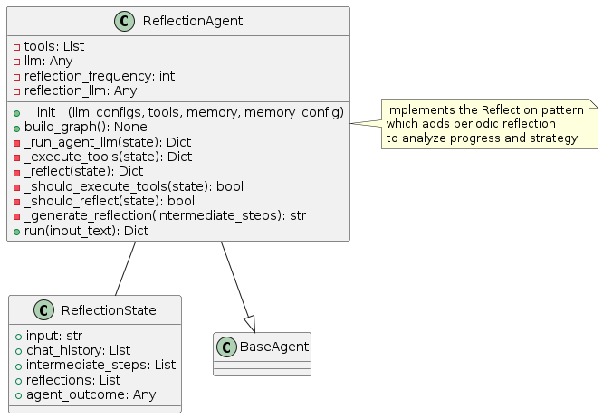
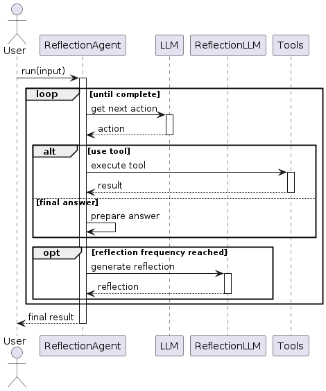
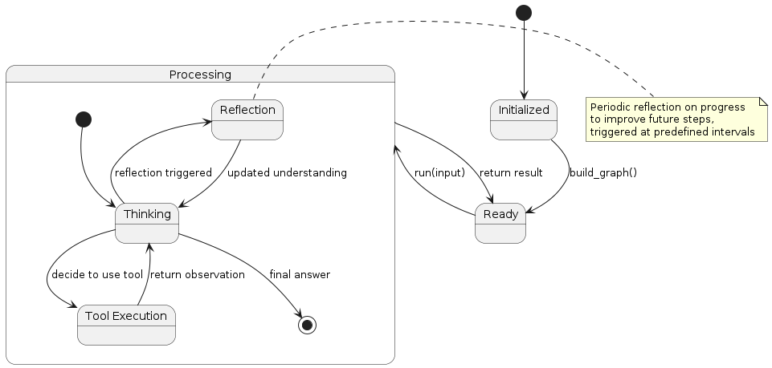

Reflection Pattern
Overview
The Reflection pattern introduces periodic reflection phases into the agent’s execution flow. Unlike the Reflexion pattern which reflects after actions, this pattern schedules regular reflection at predefined intervals. The pattern involves:
Normal Execution: Standard reasoning and action execution
Scheduled Reflection: Periodic pauses to review progress
Strategic Adjustment: Using reflections to adjust the overall approach
Knowledge Integration: Incorporating insights into the agent’s understanding
This pattern is particularly effective for longer-running tasks where course corrections may be needed.
Diagrams
Class Structure

The Reflection pattern is implemented through:
ReflectionState: Extends the basic agent state with reflection information
ReflectionAgent: Implements the agent logic with scheduled reflection capabilities
BaseAgent: The abstract base class from which the Reflection agent inherits
Execution Flow

The execution flow follows:
User provides input to the ReflectionAgent
The agent processes the task through standard reasoning and tool execution
At predefined intervals (e.g., every X steps), a reflection phase is triggered
During reflection, the agent reviews its progress and approach
Insights from reflection inform subsequent execution
The process continues until a final answer is reached
Final result is returned to the user
State Transitions

The Reflection pattern transitions through these states:
Initialized: Agent is created but not yet ready
Ready: Agent is ready to process input
Processing: Agent is actively working on the task
Thinking: Agent is reasoning about what to do next
Tool Execution: Agent is using a tool
Reflection: Agent is performing scheduled reflection
Final state is reached when the agent determines a final answer
Use Cases
Long-Running Tasks: For tasks that require extended execution time
Strategic Planning: When high-level strategy adjustments might be needed
Learning During Execution: For agents that need to adapt their approach as they go
Complex Problem Solving: When the solution approach isn’t clear from the start
Explorative Research: For open-ended research tasks where direction may need adjustment
Implementation Guide
Here’s a simple example of using the ReflectionAgent:
from agent_patterns.patterns import ReflectionAgent
from agent_patterns.core.tools import ToolRegistry
from agent_patterns.core.memory import CompositeMemory, SemanticMemory
from langchain.tools import tool
# Define tools
@tool
def search(query: str) -> str:
"""Search for information about a topic."""
return f"Results for {query}: Some relevant information..."
@tool
def note(content: str) -> str:
"""Make a note of important information."""
return f"Noted: {content}"
# Create tool registry
tool_registry = ToolRegistry([search, note])
# Create memory system
memory = CompositeMemory({
"semantic": SemanticMemory(), # For storing reflections as knowledge
})
# Configure the LLMs
llm_configs = {
"default": {
"provider": "openai",
"model": "gpt-4o",
"temperature": 0.7
},
"reflection": {
"provider": "openai",
"model": "gpt-4o",
"temperature": 0.5 # Lower temperature for more focused reflection
}
}
# Initialize the Reflection agent
agent = ReflectionAgent(
llm_configs=llm_configs,
tool_provider=tool_registry,
memory=memory,
reflection_frequency=5 # Reflect every 5 steps
)
# Run the agent
result = agent.run("Research the impact of climate change on agriculture and suggest three adaptation strategies.")
print(result)
Example References
The examples directory contains implementations of the Reflection pattern:
examples/reflection_basic.py: Basic implementation with periodic reflectionexamples/reflection_advanced.py: Advanced implementation with adaptive reflection frequency
Best Practices
Set reflection frequency based on task complexity and duration
Use a separate LLM configuration for reflection with lower temperature
Store reflections in semantic memory for future reference
Design reflection prompts that focus on different aspects (progress, strategy, gaps)
Consider implementing adaptive reflection frequency based on progress
Structure reflection output to be actionable for subsequent steps
Include explicit consideration of unexamined alternatives during reflection